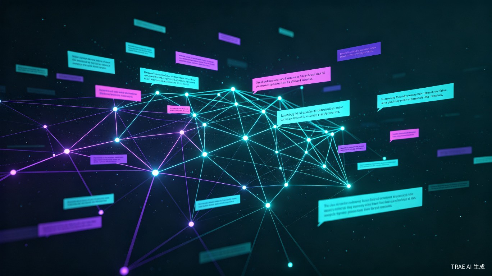
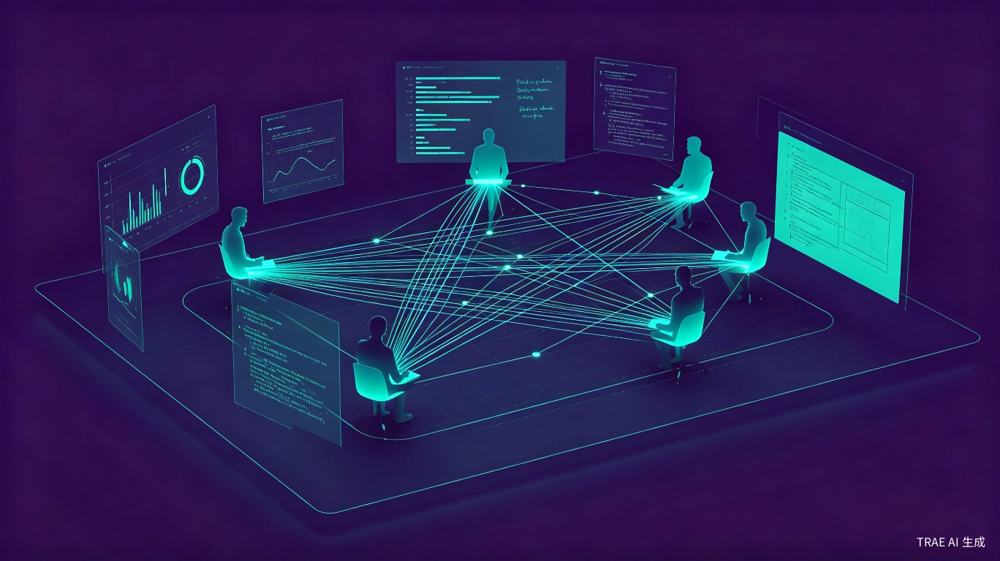
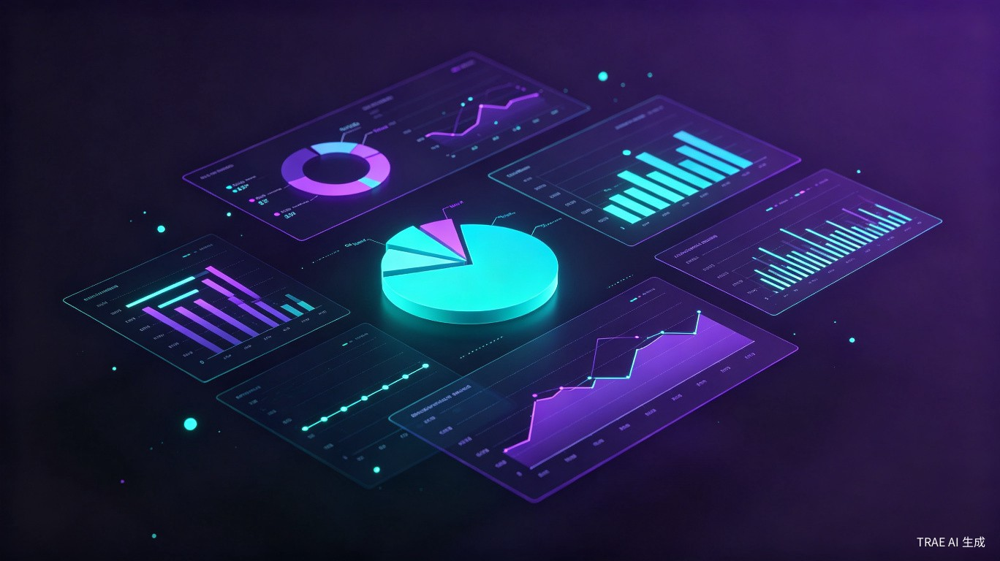

传统话语研究依赖人工收集和整理，效率低下且难以保证系统性。
四大核心模块，支撑话语研究的完整生命周期
整合 RSS、NewsAPI、GDELT 和搜索引擎四大数据源，覆盖 BBC、Guardian、NYT、 WSJ、Economist、Reuters 六家主流媒体。智能去重、时间过滤、付费墙检测， 确保语料质量。

基于大语言模型的预读分析流水线，自动提取摘要、情感倾向、话语框架、 关键术语、叙事结构等维度。为编码者提供结构化参考，提升编码效率和一致性。

支持任务分配、单人编码、双人编码等多种工作模式。内置 Cohen's Kappa 系数计算， 实时评估编码者间一致性。分歧仲裁机制确保编码质量可控。

提供框架分布饼图、时间线图、媒体热力图等可视化分析。内置语料库语言学工具： 词频统计、N-gram 分析、搭配分析、KWIC 检索、文体统计，满足话语研究量化需求。
从架构到细节，为学术严谨性提供技术保障
Readability → JSON-LD → Firecrawl → Jina AI → Archive.today，确保正文提取成功率
RSS 源连续失败 5 次自动跳过，防止无效请求，保障系统稳定性
时间过滤 + URL 标准化 + SHA-256 去重，三阶段校验确保数据质量
词数阈值 + 关键词匹配双条件检测，31 个英文标识词覆盖主流付费模式
Vercel-safe 分批执行架构，前端驱动顺序调用，优雅解决平台超时限制
系统角色 + 研究角色双轨体系，灵活适配不同研究场景的团队协作需求
数据访问层抽象，Client 注入实现跨环境复用，隔离厂商锁定风险
TypeScript strict 模式 + Zod Schema 校验，端到端类型保障
OutSight 专为话语研究者打造，从语料采集到统计分析， 提供完整的工具链支持。